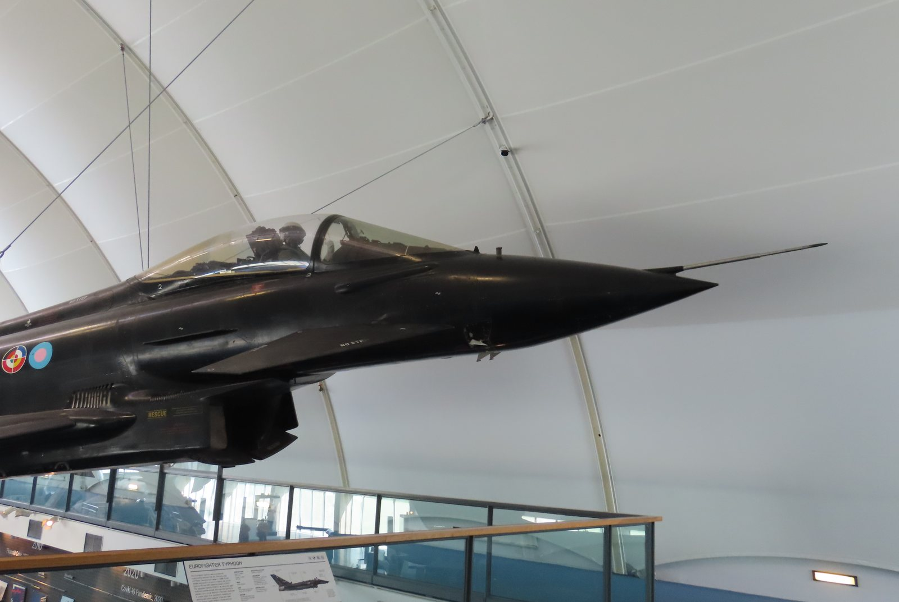

Piazza Affari chiude venerdì 16 ottobre 2026 in rialzo dello 0,93%, con il FTSE MIB a 49.857 punti. La performance è in controtendenza rispetto al Nasdaq americano, che perde il 2,1% nella stessa seduta. A trainare il listino italiano è Leonardo, +4,7%, che beneficia di un doppio via libera regolamentare. Positive anche Brunello Cucinelli (+4,3%), Saipem (+4,1%) e Buzzi (+3,9%). In coda il settore tech con Technoprobe a −5,2%.
FTSE MIB — chiusura del 16 ottobre 2026
| Titolo | Variazione giornaliera | Nota |
|---|---|---|
| Leonardo | +4,7% | Ok antitrust UE + contratto DRS |
| Brunello Cucinelli | +4,3% | Luxury resiliente |
| Saipem | +4,1% | Brent a $110, oil services in rally |
| Buzzi | +3,9% | Cementifici, energia in calo relativo |
| UniCredit | +1,4% | BCE ok per Commerzbank |
| Technoprobe | −5,2% | Chip selloff globale contagia anche il collaudo |
Leonardo: doppio driver regolamentare
Leonardo guida il rialzo del FTSE MIB grazie a due novità separate arrivate in settimana. La prima: la Commissione Europea ha concesso il via libera incondizionato all'acquisizione di Iveco Defence Vehicles, il braccio militare terrestre di Iveco, per circa 1,6 miliardi di euro. L'operazione consolida la posizione di Leonardo nell'industria della difesa terrestre europea, affiancando le divisioni già esistenti in aeronautica e elicotteri.
La seconda notizia riguarda la divisione americana: Leonardo DRS ha ottenuto un contratto anti-drone con le forze armate statunitensi del valore fino a 500 milioni di dollari. I sistemi anti-UAV (Unmanned Aerial Vehicle, veicolo aereo senza pilota) sono diventati una priorità assoluta dopo l'utilizzo massiccio di droni nel conflitto ucraino: la domanda di tecnologie di counter-drone è in forte crescita in tutto il mondo.
💡 Impara: Risiko della Difesa Europea
Il termine "Risiko della Difesa" descrive il processo di consolidamento in corso tra le aziende europee del settore militare e aerospaziale. Con la crescita della spesa per la difesa imposta dall'obiettivo NATO del 2% del PIL, i governi europei preferiscono comprare da campioni industriali continentali piuttosto che dipendere solo da fornitori americani. Questo crea opportunità di acquisizione e fusione: Leonardo (elicotteri, aerei, elettronica di bordo, sistemi anti-drone), Rheinmetall (carri armati, munizioni), Airbus (caccia Eurofighter, spazio), BAE Systems (UK). Il risiko difesa è analogo al Risiko Bancario avvenuto nel settore finanziario: grandi operatori che si consolidano per raggiungere scala critica europea.
UniCredit: la BCE apre la strada al controllo di Commerzbank
Il 15 ottobre 2026, la Banca Centrale Europea ha autorizzato UniCredit a superare la soglia del 30% del capitale di Commerzbank, seconda banca tedesca per asset. Con il completamento dell'offerta, UniCredit salirà al 47,59% del capitale e al 49,65% dei diritti di voto, con l'obiettivo di raggiungere circa il 50% dei voti entro fine 2026 — soglia che tecnicamente le attribuisce il controllo.
Restano da ottenere le approvazioni dell'Antitrust europeo (scadenza 16 novembre 2026), della Federal Reserve americana e dell'autorità polacca di vigilanza bancaria. Ma il via libera BCE è il più importante: significa che il regolatore bancario principale ha giudicato l'operazione priva di rischi per la stabilità finanziaria.
💡 Impara: Superamento della Soglia del 30% e OPA Obbligatoria
Nella maggior parte dei sistemi giuridici europei, chi supera il 30% delle azioni di una società quotata è obbligato a lanciare un'Offerta Pubblica di Acquisto (OPA) sul restante capitale. La logica è tutelare i piccoli azionisti: se un soggetto sta acquisendo il controllo, deve offrire a tutti la possibilità di uscire allo stesso prezzo. Nel caso UniCredit-Commerzbank, la BCE ha autorizzato il superamento della soglia del 30% nell'ambito del percorso regolamentare verso il controllo. Il prezzo dell'offerta e le condizioni finali devono ancora essere approvati dalle autorità antitrust competenti — un passaggio che il mercato conta entro fine 2026.
Il contesto: Milano sale perché è difesa, non tech
La divergenza tra Piazza Affari (+0,93%) e il Nasdaq (−2,1%) nella stessa seduta non è un caso. Il FTSE MIB è storicamente esposto ai settori bancario, energia e difesa — tutti meno sensibili alle oscillazioni del ciclo dei semiconduttori. In una giornata in cui il mercato vende tech e AI, Milan beneficia del "rotation trade" (rotazione settoriale): capitali che escono dai chip e cercano riparo nei titoli industriali, difensivi e finanziari.
Saipem (+4,1%) riflette la forza del petrolio: con il Brent a 109,86 dollari (+3,72%), le aziende di oil services come Saipem e Tenaris beneficiano di margini elevati e carnet ordini solido. Brunello Cucinelli (+4,3%) conferma la resilienza del luxury italiano anche in un contesto macro difficile.